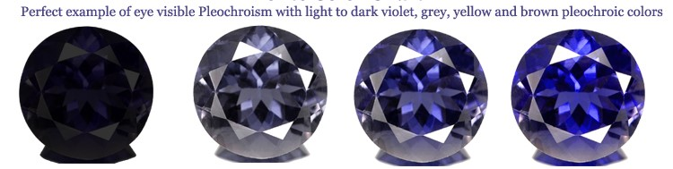
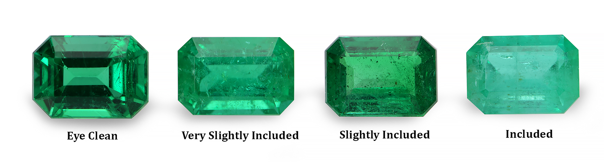
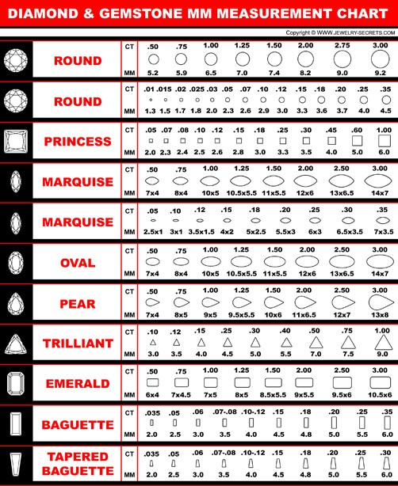
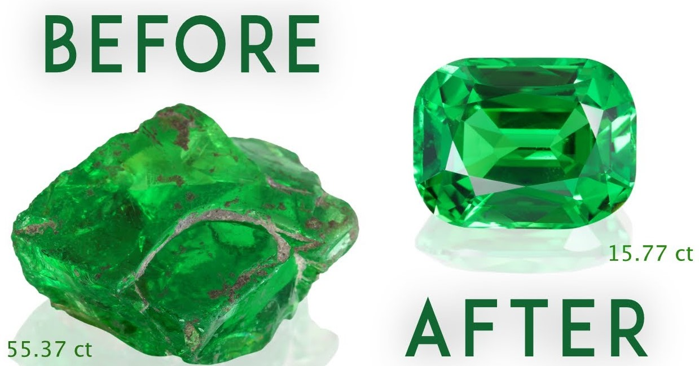

Color is one of the largest factor related to how a gem is evaluated. Even to the point that color can change the 'classification' of a gem. Such would be the difference between something like a Ruby compaired to a Pink Saphire. Even so it's not all too clear how this directly effects value of a gem.
This catagory envelops the ideas of Hue (color name), Tone (darkness/lightness), and Saturation (vividness). All of these facets combined determine the body color of the gem. As for the optimal combination of these, it purly will depend on the gem species itself. Take the color blue: an Aquamarine would be favored at a lighter tone, while a saphire is usually valued for deep tones. They are the same hue, but not considered equal.
This catagory refers to the relative 'transparency' of a gem. The easiest description in layman's terms is a clear gem vs a cloudy gem. Characteristics that typically cause less transparency features from the inside are usually called inclusions, while ones from the outside are usually called blemishes. This is also a very nuanced catagory that heavyly relies on the species of gem. Certain gems can be very rare to find with no inclutions while others might be expected to never have any.
Overall, clarity tends to judge things that the unaided eye can see. This can include size, nature, number, and location of these characteristics. While most gems find higher transparency more valuable, it is also very possible for inclutions to create rare effects, and in the gem world rare tends to mean valuable. For example the star saphire and cat’s eye chrysoberyl require needle inclusions to create the designated phenomena.
This catagory is two parts combined. Size in measurements like millimeters, or size expressed by weight (carats). A metric carat is 1/5 of a gram. Prices even are usually given by 'per carat'. It's also very skewy because a carat of diamond will not equal, say, a carat of opal. Overall though, you can expect that a larger gem or higher carat will have an exponential price increase, as there will become less and less other gems of compairable size. The last thing to consider is that the rarity of a gem species will effect these numbers. Less rare gems usually can be found in larger chunks making higher carats less pricy.
This catagory tends to refer to the quality of the propotions, symmetry, and polish. Shape is often a second-hand thought here, although this is not accounting for artful cuts. The cut of a gem will greatly effect the overall value, as it can both enhance aspects like color, but it can also ruin them if the cut is bad. A fair amount of cuts will help to make the light fully bring out the beauty of a gem. This is the catagory that ties all of the previous ones together as well. Cut effects color as read above, has to work around (or with) the natural clarity, and cutting the gem likely will lessen the carat of the natural gem (as removing parts clearly lessen it's weight). As usual, there is no one set standard for cuts, and optimal cuts will vary based on species and individual gem.
There is many more factors that can determine the value of natural gemstones. Besides the physical characteristics above, there processes like 'chemical treatment' or 'artful cutting' which can change the value of a gem. Some gem types for sale today are only a product of activities like treatment!
There is also things like supply and demand to take into account. If a gem is rare, or hard to aquire, or even hard to make pretty, this can effect the prices the gem will sell at.